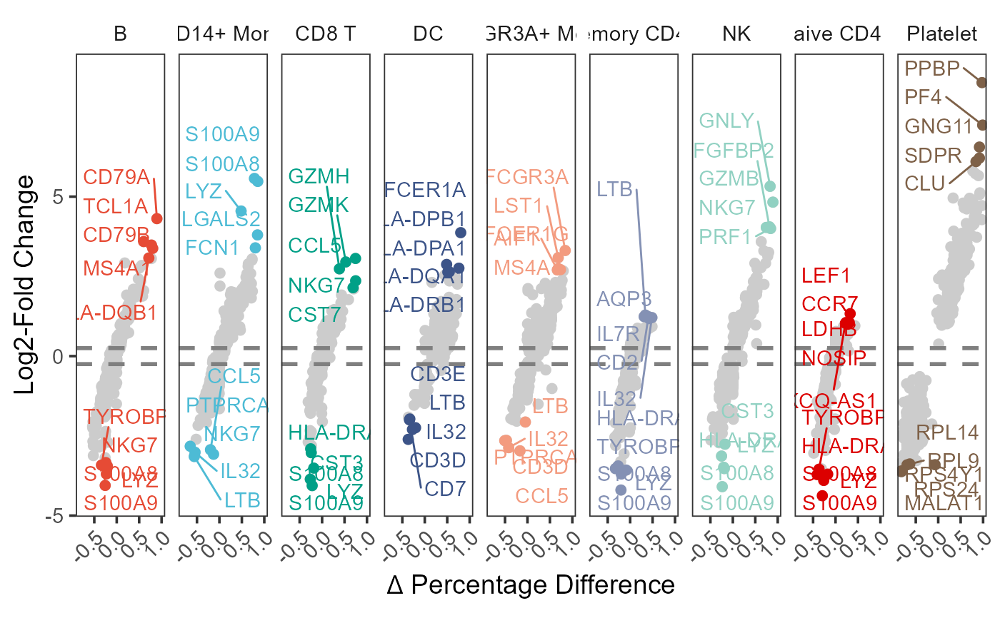

marker_volcano.RdMarker genes volcano plot
Dataframe marker genes from findAllmarkers function from seurat.
Your own gene names to be labeled on plot, defaults is null.
Numbers top genes to label, defaults is 5.
The threshold of log2FC, defaults is 0.25.
Hline size, defaults is 1.
Hline color, defaults is "grey50".
Positive gene force parameters to avoid overlap gene labels, defaults is 5.
Negative gene force parameters to avoid overlap gene labels, defaults is 2.5.
Adjustments on the horizontal of the gene label, defaults is 0.8.
Adjustments on the horizontal of the positive gene label, defaults is 0.25.
Adjustments on the horizontal of the negative gene label, defaults is 0.
Theme base size, defaults is 14.
Facet border color, defaults is NA.
Facet fill color, defaults is "white".
Plot y label, defaults is "Log2-Fold Change".
Numbers rows to plot, defaults is 1.
Return a ggplot.
test <- system.file("extdata", "pbmc.markers.csv", package = "scVisual")
markers <- read.csv(test)
marker_volcano(
markers = markers,
top_n = 5,
label_col = ggsci::pal_npg()(9)
)
#> Warning: Using `size` aesthetic for lines was deprecated in ggplot2 3.4.0.
#> ℹ Please use `linewidth` instead.
#> ℹ The deprecated feature was likely used in the scVisual package.
#> Please report the issue to the authors.
